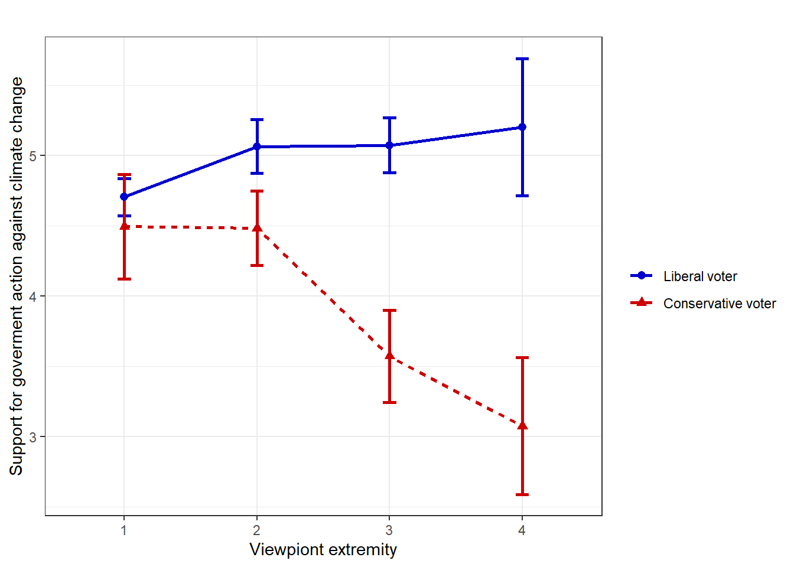
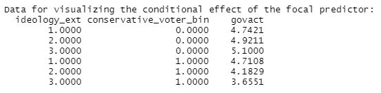

14 Tutorial: Moderation analysis
After working through Tutorial 15, you’ll…
- have a good idea about what problems are best solved with moderation analysis
- know how to test & probe an interaction, i.e. perform and interpret a moderation analysis
- know how to visualize interaction effects
14.1 Introduction to moderation
Most of you will have had contact with moderation analysis before. Often, students are first exposed to moderation analysis / interactions in “Statistics I” when they learn how to perform an ANOVA (ANalysis Of VAriance) and how to probe an interaction, i.e., test whether the effect of an independent variable on the dependent variable differs at different levels of a second independent variable. ANOVAs are often used in experimental studies, for example, to test the effect of three different ad placements in newspapers (front page, middle section, ad page) on readers’ recall. You might test an interaction in this experiment by adding another independent variable that influences the relationship between ad placement and recall, e.g. color choice (black/white, weakly saturated colors, strongly saturated colors). But even if you haven’t had any exposure to moderation analysis and experimental designs before, you should become familiar with the procedure very quickly with the following tutorial. In this tutorial, we will continue to use linear regression techniques because ANOVA is basically nothing more than a linear regression with an independent variable that is a categorical/factor variable.
Before we start, recall again what linear regression is all about: Linear regression allows you to quantify the relationship between variables and answer the question whether two (or more) variables share a linear relationship. As mentioned in earlier chapters, it is of limited use to know that two variables are related, i.e., to ask whether two variables share a relationship. Just like asking why and how two variables are related (mediation analysis), asking when and under what circumstances two variables are related (moderation analysis) can be much more informative. Therefore, moderation analysis asks whether the effect size of this linear relationship depends on third variables, e.g., events or personality traits.
The variable W is called a moderator of the relationship between a focal independent variable X and a dependent variable Y, when the size, sign, or strength of the effect of X on Y is dependent on the size of W. This effect of a moderating variable on the relationship between X and Y is also called interaction effect. Finding a moderator / interaction for an effect can help you to determine the situations, events, or groups of people for which the impact of X on Y is significant or non-significant (i.e. absent vs. present), small or strong, and even positive or negative.
Example for moderation: Knowing moderator variables can be critical, especially in clinical medical research. Imagine that a drug shows a strong positive, curative effect in one group of patients (e.g., men) and a small negative, toxic effect in another group (e.g., women). When prescribing this drug, it is essential that doctors pay attention to the moderator variable sex! However, a multiple linear regression may have overlooked this moderating effect of sex, finding only a (small) positive effect of drug use in the overall population, e.g., if your sample includes more men than women. Therefore, searching for moderator variables is an important step for researchers.
14.2 One-step process of moderation
Unlike mediation analysis, moderation analysis assumes a one-step process: The moderator W influences the relationship between X and Y directly. To see an illustration of how this relationship is influenced by W, see this conceptual diagram of a simple moderation process7:
| Image: A simple mediation model (Source: Andrew F. Hayes, p. 235) |
In summary, a simple moderation model contains a dependent variable (Y), a focal independent variable (X), and a moderator variable (W), where the relationship (e.g., effect size, effect direction, effect significance) between X and Y depends on the magnitude of W.
14.3 Statistical representation and equations
When the effect of X is dependent on W, this means that for different values of W, X’s effect on Y is different. Statistically, we can rewrite the values of X, that depend on W, as a multiplication of X and W with an own coefficient (e.g., b * XW). Of course, we want to control for the pure effect of X on Y and for the pure effect of W on Y at the same time, which leads to this statistical representation of moderation effects that looks like this:
- Y = i[Y] + b1 * X + b2 * W + b3 * XW,
where i[Y] represent the intercept, b1, b2, and b3 are the respective regression coefficients, and XW is a variable constructed as the product of X and W.
| Image: Statistical diagram of a simple moderation model (Source: Andrew F. Hayes, p. 241) |
Interpreting b3, the interaction effect: Since the product XW will always look the same, no matter whether you consider X as the moderator or W as the moderator, b3 can have two different meanings, depending on your moderator choice (X or W). when W is considered to be the moderator of X’s influence on Y, b3 quantifies how the effect of X on Y changes as W changes by one unit. However, if X is thought of as the moderator of W’s impact on Y, then b3 predicts how the effect of W on Y changes as X changes by one unit. The mathematics are unconcerned with the variable you consider to be the moderator in your study, that’s the concern of your theory. So depending on your theoretical assumptions, both interpretations can be accurate.
| A generic interpretation of the interaction effect in a moderation analysis would be that two individuals who differ by one unit on X are estimated to differ by XW’s regression coefficient units on Y as W changes by one unit. |
Interpreting b1 and b2, the conditional effects: You might have already noticed that when W = 0, then most parts of the above equation can be deleted (because multiplications with 0 result in 0). Therefore, we refer to b1 as the conditional effect of X on Y. This means that b1 quantifies how much two cases that differ by one unit on X, but are W = 0, are estimated to differ on Y. The conditional effect quantifies the association between X and Y conditioned on W = 0. Please, do not interpret b1 as the relationship between X and Y “controlling for W on average” or “controlling for W and XW”, which are common phrases in scientific papers but are incorrect. In addition, it is also not correct to call the conditional effect the “main effect of X”, which is a term that is often used in ANOVA and you might already be familiar with it, but it is incorrect. Like b1, b2 is a conditional effect and it quantifies how much two cases that differ by one unit on W are estimated to differ on Y conditioned on X = 0.
| A generic interpretation of the conditional effect in a moderation analysis would be that two individuals who differ by one unit on X are estimated to differ by X’s regression coefficient units on Y when W = 0. |
Comparing these interpretations with multiple linear regression: It’s worth noting that the interpretations of b1 and b2 in moderation analysis differ significantly from the the interpretation of the b1 and b2 coefficients that you obtain when you run a multiple linear regression, i.e. when XW is not included as an antecedent variable and the regression equation looks like this: Y = i[Y] + b1 * X + b2 * W. In a multiple linear regression, b1 and b2 quantify how much two cases that differ by one unit on X are estimated to differ on Y holding W constant (b1) and how much two cases that differ by one unit on W are estimated to differ on Y holding X constant (b2). The meaning of conditional effects (conditioned on W = 0) and unconditional effects (controlling for W, i.e. holding W constant) are completely different. Please, try to not confuse the concept of conditioning with controlling.
Interpretation of controlling, i.e. multiple linear regression: Two individuals who differ by one unit on X but are equal on W are estimated to differ by X’s regression coefficient units on Y.
Interpretation of conditioning, i.e. moderation analysis: Two individuals who differ by one unit on X but have a zero score in W (W = 0) are estimated to differ by X’s regression coefficient units on Y.
Tip for advanced students: As a general rule, when XW is in the model and b3 is statistically significant, keep X and W in the model as well (even if inferential tests suggest otherwise). There are very little exceptions from this rule and you can read all about them in Hayes, 2022, if this should ever become relevant for you. However, if b3 is not statistically significant, you should omit XW altogether and perform multiple linear regression instead.
14.4 Example
That was a lot of high-level statistical input! Let’s take a mental break and turn to an actual example to help you understand the main concepts and how to interpret the model. Once again, we’ll use to the glbwarm data. This time, we’ll create two new variables for our tutorial, so please run this code first:
library(processR)
data <- processR::glbwarm
data <- data %>%
mutate(ideology_ext = case_when(
ideology == 1 ~ 4,
ideology == 2 ~ 3,
ideology == 3 ~ 2,
ideology == 4 ~ 1,
ideology == 5 ~ 2,
ideology == 6 ~ 3,
ideology == 7 ~ 4)) %>%
mutate(conservative_voter = case_when(
partyid == 1 ~ "Liberal voter",
partyid == 2 ~ "Liberal voter",
partyid == 3 ~ "Conservative voter")) %>%
mutate(conservative_voter = factor(conservative_voter, levels = c("Liberal voter", "Conservative voter"))) %>%
mutate(conservative_voter_bin = case_when(
conservative_voter == "Liberal voter" ~ 0,
conservative_voter == "Conservative voter" ~ 1))14.4.1 Knowing your data
You now have three variables in this data set that we want to continue working with because they are great for learning moderation analysis:
- govact (= support for government action):
The variable is an index of how each participant answered five questions regarding how supportive he or she is of different policies or activities taken by the US government to address the threat of global climate change (e.g. “How much do you support or oppose increasing government investment for developing alternative energy like biofuels, wind, or solar by 25%?”).
Response options were scaled from “Strongly opposed” (coded 1) or ”Strongly support” (7). - ideology_ext (= viewpoint extremity): The political ideology of respondents was measured on a liberalism-conservatism scale. Viewpoint extremity was calculated as the absolute difference of each respondents’ individual score from the liberalism-conservatism scale mean (4), resulting in an extremity score that ranged from 1 “no extremity” to 4 “maximum extremity”,
- conservative_voter (= being Republican, yes/no): This variable measured self-identification as a voter of the U.S. Republican party, i.e. being a conservative voter. It is a binary / dichotomous variable with 1 = “Conservative voter” and 0 = “Liberal voter”.
Throughout this chapter, the following research question will guide us on our way to master moderation analysis:
Research Question: Is the relationship between viewpoint extremity and support for government action against climate change dependent on vote choice, i.e. on voting for the Republican party? In other words, does the relationship between holding extreme viewpoints and support for government action on climate change differ between conservative and liberal voters?
14.4.2 Visual inspection of linear trends
Our interest is in whether the effect of viewpoint extremity (X) on support for government action against climate change (Y) depends on voting for the Republican party (W). Once again, to answer a research question, it’s extremely useful to have a look at your variables prior to your analysis. So let’s start by examining the relationship between viewpoint extremity, i.e. holding extreme political viewpoints, and support for government action against climate change:
library(ggpubr)
data %>% ggplot(aes(x=ideology_ext, y=govact)) +
geom_count() +
theme_bw() +
labs(x="Viewpoint extremity", y="Support for government action against climate change") +
geom_smooth(method='lm', formula= y~x,se=FALSE, color = "darkred") +
stat_regline_equation(label.y = 1.4)
Evaluation: It is evident that viewpoint extremity and support for government action against climate change share a negative relationship.Individuals who hold more extreme political viewpoints are less likely to support for government action against climate change.
What could be the explanation for a negative relationship? Perhaps U.S. citizens with extreme ideological attitudes have a poorer relationship with governments in general? It could be that radicalized citizens distrust government more and therefore do not want to support government action, even in the case of climate change. To test this hypothesis, we would need to conduct a mediation analysis with a mediator variable called “distrust in government” to determine whether distrust in government is indeed the missing link. However, our data does not provide such a variable. Too bad.
But there might also be another explanation. Liberal voters care more about climate change, while conservative voters do not think climate change is an important political issue. Maybe the support for government action on climate change might differ between these to voter groups? Let’s make a visual check of this hypothesis by looking at the regression lines of both voter groups:
library(ggpubr)
data %>% ggplot(aes(x=ideology_ext, y=govact, color = conservative_voter)) +
geom_count() +
scale_color_manual(values = c("Liberal voter" = "mediumblue", "Conservative voter" = "#CC0000")) +
theme_bw() +
theme(legend.position = "none") +
labs(x="Viewpiont extremity", y="Support for government action against climate change") +
geom_smooth(method='lm', formula= y~x,se=FALSE, color = "#404040") +
stat_regline_equation(label.y = 1.4) +
facet_wrap(~conservative_voter)
Instead of the regressions, you can also compare the mean values of the two groups if you like this form of presentation better:
library(ggpubr)
data %>%
ggline(x = "ideology_ext", y = "govact", color = "conservative_voter",
add = c("mean_ci"),
palette = c("mediumblue ", "#CC0000"),
linetype = "conservative_voter", shape = "conservative_voter", size=1.0,
legend = "right",
ylab = "Support for goverment action against climate change", xlab = "Viewpiont extremity",
legend.title = "", title="") +
theme_bw()
Evaluation: Obviously, there is an interaction at play here! The effect of viewpoint extremity on support for government action against climate change seems to be dependent on voting for the U.S. Republican party, i.e. being a liberal or a conservative voter. To be precise, moderate liberal and conservative voters, i.e. those who have low viewpoint extremity, do not differ in their support for government action against climate change. But extreme liberal and conservative voters, i.e. those who have high viewpoint extremity, differ significantly in their support for government action against climate change. While extreme liberal voters become more supportive of government action, extreme conservative voters become more opposed against government actions. In fact, viewpoint extremity has a positive effect on support for government action against climate change for liberal voters (b = 0.18), but a negative effect on support for government action against climate change for conservative voters (b = -0.53).
Before we move on to fitting the models and interpreting coefficients, let’s investigate how Y changes on different levels of X and W. This way, we will get a better feeling for the interaction effect that is happening in our data. The first plot treats viewpoint extremity as the focal predictor and vote choice as the moderator. The second plot treats vote choice as focal predictor and viewpoint extremity as moderator:


Evaluation: It seems that viewpoint extremity has a way greater impact on support for government action for conservative voters than for liberal voters. I think we now know enough about our data and are ready to fit some models!
14.4.3 Fit models
Now that we have a visual indicator that voting for the Republican party might be a relevant moderator of the relationship between viewpoint extremity and support for government action against climate change (it does change the direction of influence from negative to positive!), we should run a linear regression model to test these effects for their statistical significance. The linear model must include both the X (viewpoint extremity) and the W variable (conservative_voter) and their product XW (viewpoint extremity * conservative_voter). Let’s run such a model with the lm() function.
summary(lm(govact ~ ideology_ext+conservative_voter+ideology_ext*conservative_voter,data=data))##
## Call:
## lm(formula = govact ~ ideology_ext + conservative_voter + ideology_ext *
## conservative_voter, data = data)
##
## Residuals:
## Min 1Q Median 3Q Max
## -4.2790 -0.7421 0.0789 0.8579 3.6728
##
## Coefficients:
## Estimate Std. Error t value Pr(>|t|)
## (Intercept) 4.56317 0.11337 40.249 < 0.0000000000000002 ***
## ideology_ext 0.17895 0.05268 3.397 0.000715 ***
## conservative_voterConservative voter 0.67547 0.22961 2.942 0.003356 **
## ideology_ext:conservative_voterConservative voter -0.70680 0.09098 -7.769 0.0000000000000239 ***
## ---
## Signif. codes: 0 '***' 0.001 '**' 0.01 '*' 0.05 '.' 0.1 ' ' 1
##
## Residual standard error: 1.237 on 811 degrees of freedom
## Multiple R-squared: 0.1767, Adjusted R-squared: 0.1737
## F-statistic: 58.02 on 3 and 811 DF, p-value: < 0.00000000000000022Evaluation: We can infer the regression equation from this output: Y = 4.563 + 0.178 * X + 0.675 * W - 0.706 * XW, where i[Y] = 4.563, b1 = 0.178, b2 = 0.675, and b3 = -0.706.
Interpretation of b3’s significance: Most importantly, b3 is statistically different from zero, t(811) = -7.769, p < .001. This means that we can conclude that the effect of viewpoint extremity on support for government action against climate change is moderated by vote choice, i.e. voting for the Republican party. We now know that viewpoint extremity has a different effect on support for government action for different political groups. That’s an important finding! Had there been no evidence of moderation (i.e., b3 was not statistically different from zero), the most sensible approach would be to reestimate the model excluding the product XW (i.e. running a multiple linear regression!), thereby allowing X’s effect to be invariant across W.
Interpretation of b3’s coefficient: The interaction effect’s b3 coefficient quantifies how the effect of X on Y changes as W changes by one unit. If b3 is negative, as is here the case, then this shows that the effect of X on Y will get more negative (get smaller) as W gets larger, and that the effect of W on Y will get more negative (get smaller) as X gets larger. This becomes more obvious when we plug in actual values in the regression equation and watch how Y behaves for different values of X and W. To this end, take a look at the following moderation analysis output of processR, because processR has a handy function that inserts the values automatically, so you don`t have to do this manually (output section: “Data for visualizing the conditional effect of the focal predictor”).
| Table 1: Change in the focal predictors X conditioned on W: |
|  |
| Table 2: Change in the focal predictors W conditioned on X: |
As you can see in the first table, support for government action decreases with larger values of viewpoint extremity for conservative voters (W = 1), but increases with larger values of viewpoint extremity for liberal voters (W = 0). Like table 1, table 2 shows that the difference in support for government action between conservative and liberal voters becomes greater as viewpoint diversity increases (from X= 1 to X = 3), i.e. the decrease in support for goverment action becomes greater. It is this pattern that is meant when we learn that the effect of X on Y will get more negative (get smaller) as W gets larger, and that the effect of W on Y will get more negative (get smaller) as X gets larger. In fact, we can interpret b3 as a “difference between differences” (Hayes, 2022, p. 255): Here, as viewpoint extremity increases by one unit, the difference in impact of vote choice on support for government action increases in a way that conservatists’ support for government action decreses by -0.706 units.
General interpretation of b1 and b2: b1 and b2 are conditional effects. These regression coefficients estimate the effect of X when W = 0 and the effect of W when X = 0, respectively. You’ll realize soon that these coefficients aren’t always sensible, for instance, viewpoint extremity (X) can’t even become 0 on our chosen scale that ranges from 1 to 4. We’ll discuss that in a second.
Interpretation of b1’s coefficient: The regression coefficient for the conditional effect of X is b1 = 0.178 (p < .001). This is the estimated difference in support for government action against climate change between two individuals who differ by one unit in their viewpoint extremity, but both score zero on the conservative_voter variable, i.e. are liberal voters. This score is positive, which implies that liberals who have a one unit increase in their viewpoint extremity are estimates to have a 0.178 increase in their support for government action.
Interpretation of b2’s coefficient: The regression coefficient for the conditional effect of W is b2 = 0.675 (p < .01).This is the estimated difference in support for government action against climate change between liberals and conservatives who score zero on viewpoint extremity (X = 0), i.e. they are estimated to differ by 0.675 points. Although this interpretation is mathematically correct, substantively it is nonsense because the measure of viewpoint extremity in this study is mathematically bound between 1 and 4. An estimate of the effect of vote choice conditioned on a score of zero on viewpoint extremity has no meaning because no such people could even exist.
Finally, let’s look at a visual representation of our effects and the respective coefficients to develop an intuitive understanding of what they mean:
Try to keep this visual representation in mind or refer back to it whenever you have trouble to interpret your coefficients in a moderation analysis.
14.4.4 Standardization
You might already have guessed it, but a good way to get meaningful regression coefficients for variables that are not mathematically between 0 and a finite value is to standardize. Let’s run the model again with a standardized viewpoint extremity (do not standardize the binary vote choice variable conservative_voter!):
data$ideology_ext_st <- scale(data$ideology_ext)
summary(lm(govact ~ ideology_ext_st+conservative_voter+ideology_ext_st*conservative_voter,data=data))##
## Call:
## lm(formula = govact ~ ideology_ext_st + conservative_voter +
## ideology_ext_st * conservative_voter, data = data)
##
## Residuals:
## Min 1Q Median 3Q Max
## -4.2790 -0.7421 0.0789 0.8579 3.6728
##
## Coefficients:
## Estimate Std. Error t value Pr(>|t|)
## (Intercept) 4.93797 0.05362 92.100 < 0.0000000000000002 ***
## ideology_ext_st 0.18709 0.05508 3.397 0.000715 ***
## conservative_voterConservative voter -0.80491 0.09758 -8.248 0.000000000000000645 ***
## ideology_ext_st:conservative_voterConservative voter -0.73895 0.09512 -7.769 0.000000000000023933 ***
## ---
## Signif. codes: 0 '***' 0.001 '**' 0.01 '*' 0.05 '.' 0.1 ' ' 1
##
## Residual standard error: 1.237 on 811 degrees of freedom
## Multiple R-squared: 0.1767, Adjusted R-squared: 0.1737
## F-statistic: 58.02 on 3 and 811 DF, p-value: < 0.00000000000000022Evaluation: With a standardized viewpoint extremity variable, you can now interpret scores of X = 0 as the mean (because standardization includes centering variables on their mean, i.e. the mean becomes zero!). b2 = -0.804 (p < .001) is the estimated difference in support for government action against climate change between liberals and conservatives who score average on viewpoint extremity (X = 0). Conservatives who score average on viewpoint extremity are estimated to score -0.804 points lower on support for government action than liberals who score average on viewpoint extremity.
Note: Please remember that when you standardize a variable, the meaning of a one unit increase in that variable changes, i.e. it becomes a one-standard deviation increase. For example, b1 = 0.187 (p < .001) now changes it’s meaning: Two liberal voters who have a one point standard deviation difference in their viewpoint extremity are estimated to differ by 0.187 points in their support for government action against climate change.
14.4.5 Follow-up analysis: Pobing the interaction
Testing an interaction has its limits because it only allows us to say that viewpoint extremity affects U.S. citizens differently depending on whether or not they vote for the Republican party. But that’s not a very precise claim to make. Therefore, once we have determined that an interaction effect exists, that is, once we have tested for a moderation effect and found it to be statistically significant, we should investigate that interaction further. This is referred to as “probing the interaction”, and it entails determining if the conditional effect of X on Y is greater than zero for particular levels of W. If we select two or more values of W and then test to see if the effect of X on Y is different from zero at those specific values, then we can get to know where in the distribution of W X exerts its effect on Y—and where in the distribution it does not.
I personally like the package Interactions very much to investigate interactions in R. So I recommend to install the package and run the following code. However, the Interactions package does not work with factor variables, so we need to recode conservative_voter to 0s and 1s and save this new variable as conservative_voter_bin.
# install.packages("interactions") # to install the package (only first time)
library(interactions) # a package that allows you to inspect interaction effects graphically
data <- data %>%
mutate(conservative_voter_bin = case_when(
conservative_voter == "Liberal voter" ~ 0,
conservative_voter == "Conservative voter" ~ 1))
# Run your moderation analysis and save it to a source object:
intrct_model <- lm(govact ~ ideology_ext+conservative_voter_bin+ideology_ext*conservative_voter_bin,data=data)First, let’s investigate the change in the focal predictors X (viewpoint extremity) conditioned on different levels of W (vote choice). You have seen this kind of analysis before: in Table 1 in Fit models.
# Viewpoint extremity as focal predictor, vote choice as moderator:
sim_slopes(intrct_model, pred=ideology_ext, modx=conservative_voter_bin)## JOHNSON-NEYMAN INTERVAL
##
## When conservative_voter_bin is OUTSIDE the interval [0.12, 0.37], the slope of ideology_ext is p < .05.
##
## Note: The range of observed values of conservative_voter_bin is [0.00, 1.00]
##
## SIMPLE SLOPES ANALYSIS
##
## Slope of ideology_ext when conservative_voter_bin = 0.00 (0):
##
## Est. S.E. t val. p
## ------ ------ -------- ------
## 0.18 0.05 3.40 0.00
##
## Slope of ideology_ext when conservative_voter_bin = 1.00 (1):
##
## Est. S.E. t val. p
## ------- ------ -------- ------
## -0.53 0.07 -7.12 0.00Evaluation: The results show that for both levels of voting choice, i.e., liberal (W = 0) and conservative (W = 1) voters, the effect of X on Y is different from zero, i.e. significant. That is, the extremity of viewpoint affects support for government action on climate change for both liberal and conservative voters.
Next, let’s do the same analysis for the change of W (vote choice) conditioned on different levels of X (viewpoint extremity). Again, you have seen this kind of analysis before: in Table 2 in Fit models.
# Vote choice as focal predictor, viewpoint extremity as moderator
sim_slopes(intrct_model, pred=conservative_voter_bin, modx=ideology_ext)## JOHNSON-NEYMAN INTERVAL
##
## When ideology_ext is OUTSIDE the interval [0.41, 1.32], the slope of conservative_voter_bin is p < .05.
##
## Note: The range of observed values of ideology_ext is [1.00, 4.00]
##
## SIMPLE SLOPES ANALYSIS
##
## Slope of conservative_voter_bin when ideology_ext = 1.048999 (- 1 SD):
##
## Est. S.E. t val. p
## ------- ------ -------- ------
## -0.07 0.15 -0.44 0.66
##
## Slope of conservative_voter_bin when ideology_ext = 2.094479 (Mean):
##
## Est. S.E. t val. p
## ------- ------ -------- ------
## -0.80 0.10 -8.25 0.00
##
## Slope of conservative_voter_bin when ideology_ext = 3.139959 (+ 1 SD):
##
## Est. S.E. t val. p
## ------- ------ -------- ------
## -1.54 0.12 -12.55 0.00Evaluation: These results show that vote choice of citizens who score low on viewpoint extremity (here: -1 standard deviation from the mean, which is a score of X = 1.04) does not affect how much they support government action on climate change (estimated difference in support for government action between conservatives and liberals is -0.07, which is not statistically different from zero, p = .66). However, the more extreme citizens’ viewpoints become, the more important their vote choice is in determining how much they support government action against climate change. For citizens that score average on viewpoint extremity (Mean = 2.09), vote choice does affect how much they support government action on climate change (estimated difference in support for government action between conservatives and liberals is -0.80, which is statistically different from zero, p < .001). The same holds true for citizens who score high on viewpoint extremity (p < .001).
We can visualize these trends with the so-called Johnson-Neyman plot that plots the two values of the moderator at which the slope of the focal predictor X changes from non-significant to significant:
# Creating a Johnson-Neyman Plot for viewpoint extremity as focal predictor, vote choice as moderator:
jnPlot(intrct_model, pred="ideology_ext", modx="conservative_voter_bin", plot = TRUE,mode=1,addEq=FALSE)## JOHNSON-NEYMAN INTERVAL
##
## When conservative_voter_bin is OUTSIDE the interval [0.122, 0.373], the slope of ideology_ext is p < .05.
##
## Note: The range of observed values of conservative_voter_bin is [0.000, 1.000]
Evaluation: Again, we can infer that for both levels of vote choice, i.e., liberal (W = 0) and conservative (W = 1), the effect of X on Y is different from zero, i.e. significant. The effect only becomes non-significant between W = 0.122 and W = 0.373. However, these two limits of W are nonsensical, since there are no individuals who can score these values, as our scale is binary and can only take the values 0 and 1.
Next, let’s plot the Johnson-Neyman plot for W as focal predictor:
# Creating a Johnson-Neyman Plot for vote choice as focal predictor, viewpoint extremity as moderator:
jnPlot(intrct_model, pred="conservative_voter_bin", modx="ideology_ext", plot = TRUE,mode=1,addEq=FALSE)
## JOHNSON-NEYMAN INTERVAL
##
## When ideology_ext is OUTSIDE the interval [0.411, 1.318], the slope of conservative_voter_bin is p < .05.
##
## Note: The range of observed values of ideology_ext is [1.000, 4.000]Evaluation: This plot shows that the effect of vote choice on support for government action turns insignificant for citizens who score lower on viewpoint extremity than < 1.318. This means that for citizens who score very low on viewpoint extremity, support for government actions against climate change is independent of viewpoint extremity.
Of course, the interactions package allows you to visualize the interaction effects, too. You can use these plots if you don’t want to build them with ggplot and ggpubr, like we did in the section on Visual inspection of linear trends:
# Interaction plot for viewpoint extremity as focal predictor, vote choice as moderator:
interact_plot(intrct_model, pred=ideology_ext, modx=conservative_voter_bin,
plot.points = FALSE, interval = TRUE, int.type = c("confidence","prediction"), int.width = 0.95, outcome.scale = "response",
x.label = "Viewpoint extremity", y.label = "Support for government action against climate change",
modx.labels = c("Liberal Voter", "Conservative voter"),
main.title = NULL, legend.main = "Vote choice",
colors = c("mediumblue", "#CC0000"), line.thickness = 1.1, vary.lty = TRUE)# Interaction plot for vote choice as focal predictor, viewpoint extremity as moderator:
interact_plot(intrct_model, pred=conservative_voter_bin, modx=ideology_ext,
plot.points = FALSE, interval = TRUE, int.type = c("confidence",
"prediction"), int.width = 0.95, outcome.scale = "response",
x.label = "Vote choice", y.label = "Support for government action against climate change",
main.title = NULL, legend.main = "Viewpoint extremity",
colors = c("#F7BA83", "#EF6547", "#7F1C15"), line.thickness = 1.1, vary.lty = TRUE)
Final evaluation: After having probed the interaction, we now can make more accurate claims than just stating that viewpoint extremity affects U.S. citizens differently depending on whether or not they vote for the Republican party. We now know that this only holds true for citizens that score average to high on viewpoint extremity, i.e. have a viewpoint extremity greater than > 1.318.
14.4.6 Using processR
Finally, you can use the easy road and do everything with the processR function. Before using the function, you need to (maybe download again, here’s the link, and) run the processR script again (this can take a few minutes) that you’ve already used in the 13th Tutorial: Mediation analysis.
Once you’ve created the process function, we’ll perform the moderation analysis again, but this time we will use processR. Unfortunately, processR does not like factor variables either, so we will use the 0/1 binary conservative_voter_bin variable again.
The output of process is pretty much self-explanatory when you’ve run the moderation model manually before.
Section “Model Summary”: We can infer the regression equation: Y = 4.563 + 0.178 * X + 0.675 * W -0.706 * XW, where i[Y] = 4.563, b1 = 0.178, b2 = 0.675, and b3 = -0.706 and you can see which of these coefficients are significant (p-values).
Section “Test(s) of highest order unconditional interaction(s)”: This section gives you information about whether the inclusion of the interaction effect XW does significantly increase your R2 value. In this case, it does. Compared to a multiple linear regression model, including XW, i.e. assuming a moderation, does enhance R2 by +0.0613 (p < .001). Obviously, the model that includes the interaction is the better fitting model!
Section “Conditional effects of the focal predictor at values of the moderator(s)”: Here, you can see the mean values (conditioned on X = 0, which is nonsensical without standardization!) for liberals (W = 0) and conservatives (W = 1) and whether these mean differences are statistically significant (p-values).
Section “Data for visualizing the conditional effect of the focal predictor”: Down below, you also get values that show you how X, W, and Y behave on different levels of the other variables, which can be really helpful for interpreting your coefficients (e.g., see how we used them in Table 1 and Table 2 in Fit models). In addition, you can copy-paste these values, create a data frame with them and use them to plot diagrams.
14.5 Take Aways
- explaning the when and the circumstances: a moderation model helps you to determine the situations, events, or groups of people for which the impact of X on Y changes
process: calculate the moderation model either by using the classiclm()function (multiple linear regression with a product of X and W) or by using theprocessfunction of theprocessscript by A. F. Hayes- conditioning vs. controlling: do not confuse conditioning (W = 0) and controlling (W = constant)
- testing vs. probing: testing an interaction only shows that X affects Y at different levels of W, but probing an interaction tells exactly in which way the effect of X changes Y at different levels of W
- standardization: a great way to get meaningful regression coefficients for variables that are not mathematically bound between 0 and a finite value
14.6 More tutorials on this
You still have questions? The following book can help you with that:
- Hayes, A. F. (2022). Introduction to Mediation, Moderation and Conditional Process Analysis (p. 233-281) Link
You should be aware that unlike mediation, where statistical equations and conceptual diagrams match perfectly, the conceptual diagram of a moderation model is different from the corresponding statistical diagram.↩︎